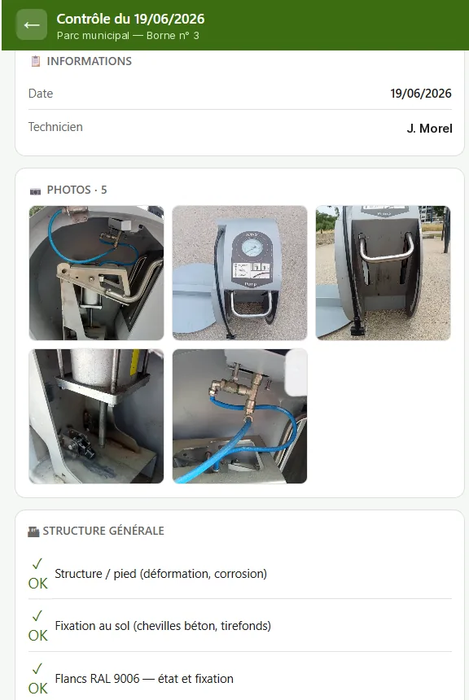

PRÉPARATION
Bons de préparation
- AVANT
- Bons imprimés, quantités cochées au stylo puis ressaisies.
- APRÈS
- Préparation ligne par ligne sur tablette, reliée à votre logiciel de gestion.
Je conçois des logiciels sur mesure pour les PME et les artisans : faciles à prendre en main, complets, sécurisés et conformes à la réglementation. Fini les ressaisies, les fichiers Excel fragiles et les feuilles volantes.
Des écrans faits pour le terrain : gros boutons, peu de champs, utilisables sur tablette ou téléphone.
De la saisie au tableau de bord, en passant par les exports pour la compta ou vos clients.
Accès sécurisés, sauvegardes, respect du RGPD et des obligations de votre métier.
Chaque outil part d'un geste que vous faites aujourd'hui à la main. Quelques exemples :
Quelques outils conçus et développés sur mesure. Noms et données remplacés par des exemples.




Derrière Lirazzo, un responsable de structure : je pilote un centre de profit et je suis au quotidien sur le terrain avec les équipes.
Je sais ce que coûte une ressaisie, un tableau que plus personne n'ose modifier, ou un logiciel trop compliqué que l'équipe finit par contourner. Lirazzo est né de là : aider les entreprises à trouver des solutions simples pour améliorer leurs process, avec des outils faciles à utiliser mais complets, sécurisés et conformes.
Je me déplace chez vous, entre Angers et Nantes : Vallée de la Loire, Mauges, Pays d'Ancenis, Segréen.
Tarifs sur devis, gratuit et détaillé. Questions fréquentes
Décrivez-la en quelques lignes : je reviens vers vous avec une première piste.